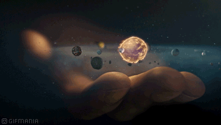

Como calcular el peso de una persona en otro planeta

Cada planeta del sistema solar tiene una densidad y un tamaño distinto, y tu peso será también diferente.
Si eres un glotón que por más que lo intentes no consigues ponerte a dieta, aprendiz de astronauta o simplemente una persona curiosa, esto te interesa. ¿Sabías que si viajas a otro planeta tu peso variará? Como lo oyes. Así que si quieres sentirte más ligero, pero no tienes fuerza de voluntad para comer menos, emigrar a otro mundo podría ser una solución. Pero ten cuidado no te vayas a equivocar de planeta, porque dependiendo a dónde vayas, también podrías ganar unos cuantos kilos.
En primer lugar hay que diferenciar entre peso y masa, dos conceptos que se confunden con mucha facilidad. El peso es la medida en que la fuerza de la gravedad atrae los cuerpos al suelo, y se calcula multiplicando la masa por el factor gravitacional.
Peso = Masa x Gravedad / 9.8 (GRAVEDAD DE LA TIERRA)
La mayoría de quienes estáis leyendo esto lo estaréis haciendo desde la Tierra, planeta en el que la gravedad es de 9,8 m/s(2). Con este dato, y con el de tu peso, podrás calcular cuál es tu masa, algo que es necesario saber.
Cada planeta tiene una gravedad diferente, que depende de su tamaño y de su densidad. A mayor tamaño, mayor será su poder de atracción gravitacional. Pero si el planeta es gaseoso, la gravedad será menor. Así, tenemos un planeta como Júpiter, que es cerca de 318 veces más grande que la Tierra, pero su gravedad es solo dos veces y media superior, porque es muy gaseoso.
¡Prueba a calcular tu peso en los diferentes planetas!